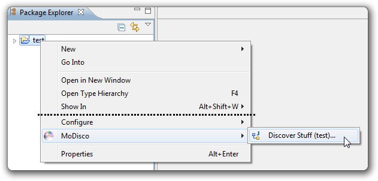
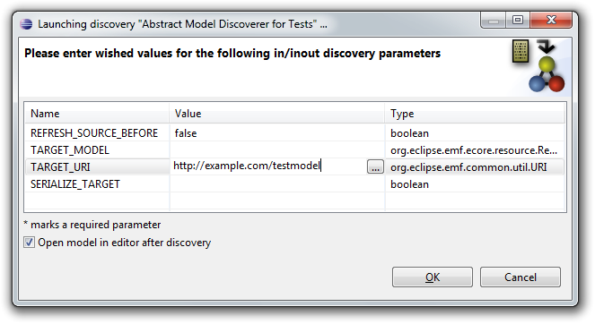
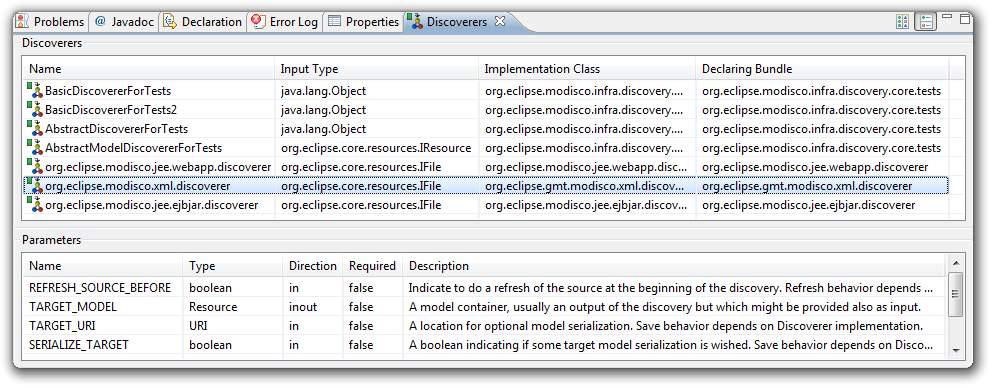

To launch a discoverer, right click on the element you want to discover. It can be a project or file in the Project Explorer for example.
Then, in the MoDisco menu, you will see a list of discoverers applicable to your selection. Choose the one you want to launch:

Then, if the discoverer has input parameters, a dialog opens to let you enter these parameters:

Parameters that are marked with an asterisk are mandatory, and you won't be able to click OK to launch the discovery until you have filled them in.
Single click the Value column of a parameter to edit it. Check "Open model in editor after discovery" if you want to browse the model immediately after the discovery.
Then, click OK to start the discovery.
You can open a view that displays all registered discoverers : go in Window > Show View > Other... and select MoDisco > Discoverers:
